Java Editor
In the below image: When 'Ctrl + Space' is pressed at the cursor location, the module names that this project has access to are suggested.
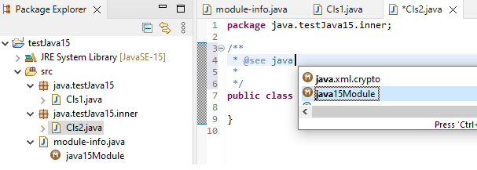
In the below image: When 'Ctrl + Space' is pressed at the cursor location, the packages that the above selected module exports are shown.
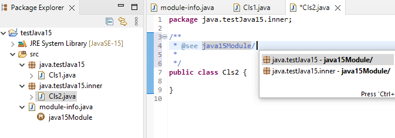
In the below image: When 'Ctrl + Space' is pressed at the cursor location, the classes in the above selected package are shown.
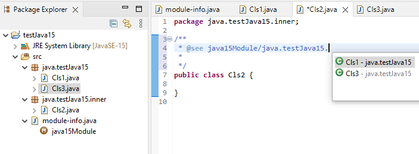
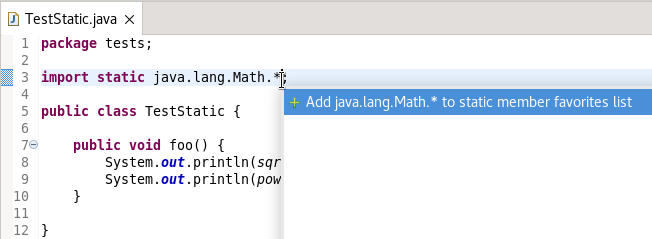

Java Views and Dialogs
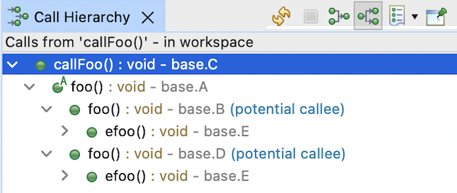
This behavior can be controlled using the following preference: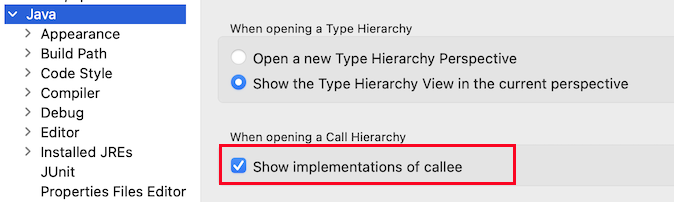
Java Formatter
In the Line Wrapping section, we can decide to allow wrapping in switch cases: before or after an arrow, and also inside lists of expressions to match (this can be controlled separately for switch expressions and switch statements).
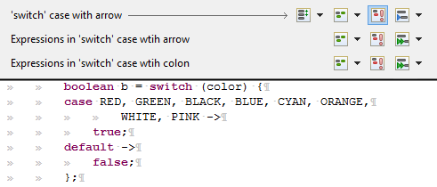
In the Keep braced code on one line section there are two new options for a more compact formatting of code blocks in switch cases with arrows or even whole switch expressions/statements.
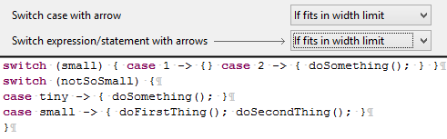
The formatter configuration sections can be found in the Profile Editor (Preferences > Java > Code Style > Formatter > Edit...).
Previously only the former behavior was available, now there's a setting to choose the latter. The checkbox called Indent from the base expression's first line is located in the Line Wrapping > Wrapping settings > Function calls section, right under the Qualified invocations setting.
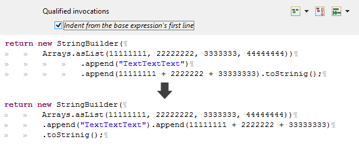
Debug
Therefore, with Eclipse 4.23 Java debugger shows a new warning:
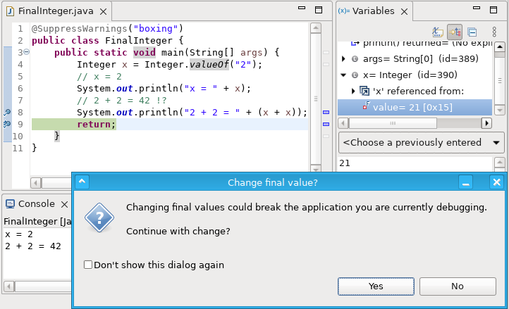
This warning is enabled by default and can be disabled via preferences:
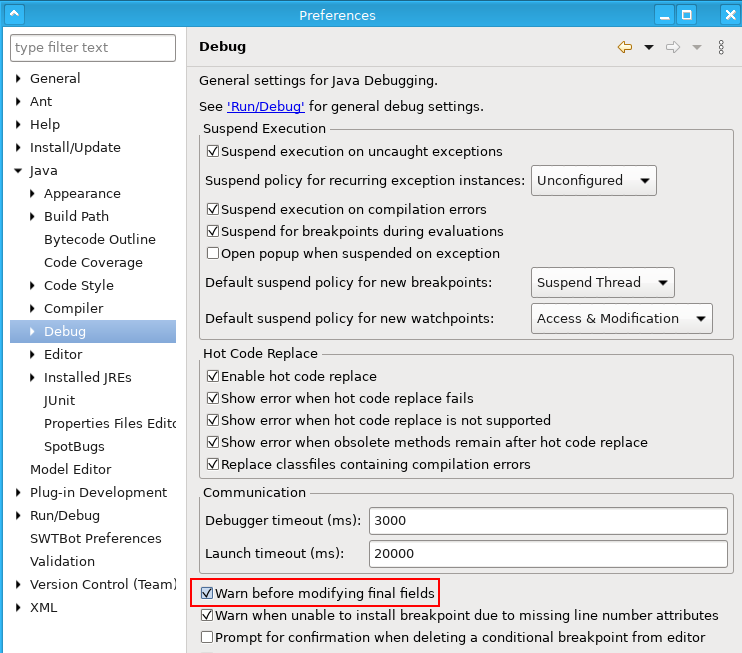
Additionally, org.eclipse.debug.ui.variableValueEditors extension point
is updated to allow custom products to contribute their own variableValueEditor
implementations to existing debug models and have even more control over final field modifications.
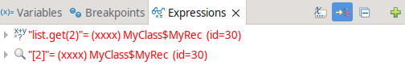
This works for watched and inspected objects too.
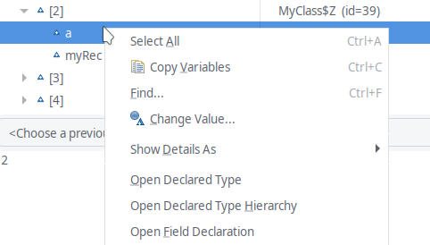
You can add new Lambda Entry breakpoint by selecting the Toggle Lambda Entry Breakpoint from the Ruler context menu or Run menu. You can select a particular lambda expression to add the breakpoint, if none is selected the entry breakpoint is added to the first lambda expression on the line. You can add only one breakpoint per line.